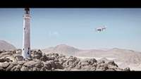
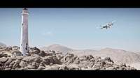
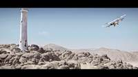
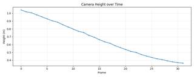
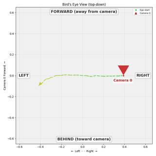

To determine the observer's (camera's) motion, let's analyze the visual cues in the video:
- Central Object: The white lighthouse serves as the primary focal point of the scene.
- Foreground Motion: Observe the rocks in the foreground. As the video progresses, these rocks shift to the left relative to the frame. This indicates that the camera is moving to the right.
- Perspective Change: The angle from which we view the lighthouse and the surrounding landscape changes smoothly. The camera is not just panning (rotating on a fixed point) but is physically changing its position in space.
- Orbital Path: Since the camera is moving to the right while keeping the lighthouse centered in the frame, it is following a curved path around the lighthouse.
- Direction of Orbit: If you imagine a top-down view of the scene with the lighthouse at the center, a camera moving from left to right while facing the center is moving in a clockwise direction.
Therefore, the observer's location is orbiting the lighthouse clockwise.
A
# Reconstruct the scene using all provided key frames recon = tools.Reconstruct.Reconstruct(InputImages) # Render the BEV with the ego-trajectory enabled to see the camera's path # We don't have specific masks yet, but ego_trajectory=True will show the camera path. bev_vis = recon.render_bev(ego_trajectory=True) # Show the BEV visualization show(bev_vis) # Also, let's check the camera positions over time to be sure cam_positions = [] for fi in recon.frame_indices: pose = recon.extrinsics[fi] cam_positions.append(pose[:3, 3]) cam_positions = np.array(cam_positions) print("Camera positions:\n", cam_positions) # Calculate the center of the trajectory to see if it's orbiting something center = np.median(cam_positions, axis=0) relative_positions = cam_positions - center # Use the 2D projection on the XZ plane (ground plane) to determine rotation # X and Z are the horizontal axes in the world frame x_coords = relative_positions[:, 0] z_coords = relative_positions[:, 2] # Calculate angles to determine the direction of rotation angles = np.arctan2(z_coords, x_coords) angle_diffs = np.diff(angles) # Handle wrap-around for arctan2 angle_diffs = np.arctan2(np.sin(angle_diffs), np.cos(angle_diffs)) avg_rotation = np.mean(angle_diffs) print(f"Average angle change per frame: {avg_rotation}") if avg_rotation > 0: print("Rotation is counter-clockwise") elif avg_rotation < 0: print("Rotation is clockwise") else: print("No rotation detected") # Check for vertical movement (Y axis) y_start = cam_positions[0, 1] y_end = cam_positions[-1, 1] print(f"Y start: {y_start}, Y end: {y_end}") if abs(y_end - y_start) > 0.5: # Significant vertical change if y_end > y_start: print("Moving upward") else: print("Moving downward") else: print("No significant vertical movement") # Final decision based on results if abs(avg_rotation) > 0.01: if avg_rotation > 0: ReturnAnswer("B") # Counter-clockwise else: ReturnAnswer("A") # Clockwise elif abs(y_end - y_start) > 0.5: if y_end > y_start: ReturnAnswer("D") # Upward else: ReturnAnswer("C") # Downward else: # Fallback if neither is clear, though one should be. ReturnAnswer("B")
[image: show_0001] Camera positions: [[ 3.90435945e-01 1.04305882e+00 1.18478607e-03] [ 3.60477161e-01 1.01785001e+00 1.34187105e-03] [ 3.45644674e-01 1.00549671e+00 4.43053922e-03] [ 3.11224235e-01 9.79670614e-01 2.70114873e-03] [ 2.79844808e-01 9.53928226e-01 6.33003513e-03] [ 2.50927305e-01 9.28455017e-01 3.71976826e-03] [ 2.18623922e-01 9.03067095e-01 7.48648821e-03] [ 1.99006552e-01 8.86550548e-01 5.97828537e-03] [ 1.61076161e-01 8.53276415e-01 4.20789933e-03] [ 1.27300193e-01 8.25215162e-01 -8.35904413e-04] [ 9.21597976e-02 7.97270393e-01 9.38939144e-03] [ 6.17232569e-02 7.69954334e-01 6.34440993e-03] [ 4.01965683e-02 7.53722192e-01 3.41698989e-04] [-1.60971301e-04 7.17801136e-01 -5.08712949e-04] [-3.40881125e-02 6.94012525e-01 -4.79211467e-03] [-6.30869818e-02 6.62525079e-01 -5.55210183e-03] [-9.66664272e-02 6.35330890e-01 -4.42481848e-03] [-1.15757864e-01 6.17529358e-01 -5.04757094e-03] [-1.51060161e-01 5.86727157e-01 -7.82152361e-03] [-1.80830798e-01 5.61592079e-01 -6.37983045e-03] [-2.08604718e-01 5.37615183e-01 -1.75762921e-03] [-2.34776778e-01 5.13652286e-01 -1.26956546e-03] [-2.51171857e-01 5.00378091e-01 -1.53338631e-03] [-2.83943486e-01 4.73804855e-01 1.52028839e-02] [-3.01775476e-01 4.53462858e-01 1.75993025e-02] [-3.21271341e-01 4.36000994e-01 3.04519005e-02] [-3.38799098e-01 4.19243034e-01 3.17712184e-02] [-3.52548705e-01 4.08530824e-01 3.69153562e-02] [-3.75288846e-01 3.92946341e-01 6.01243583e-02] [-3.93080099e-01 3.80059215e-01 7.95884336e-02] [-4.06975645e-01 3.69782925e-01 8.50653842e-02] [-4.18075520e-01 3.63385223e-01 9.82772359e-02]] Average angle change per frame: -0.10992400175283627 Rotation is clockwise Y start: 1.0430588176712976, Y end: 0.36338522

Task Analysis
The objective is to determine the 3D motion of the observer (the camera) relative to its starting position and orientation. The options suggest either a rotational motion in a horizontal plane (orbiting clockwise or counterclockwise) or a linear motion along the vertical axis (moving upward or downward).
Coordinate System Resolution: The question asks about the observer's location in 3D space. I will use the World Space provided by the reconstruction tool. In this system:
- +Y is aligned with gravity (Up).
- The XZ-plane represents the ground/horizontal plane.
- Camera positions are extracted from the translation component of the camera-to-world (c2w) matrices.
- "Orbiting" will be analyzed by looking at the trajectory in the XZ-plane.
- "Upward/Downward" will be analyzed by looking at the change in the Y-coordinate over time.
Information Needs
To answer this reliably, I need the sequence of 3D camera positions across the video clip.
- Camera Trajectory: A set of (X, Y, Z) coordinates for the camera at each sampled frame.
- Visual Trajectory: A top-down (BEV) view of the camera's path to identify orbiting patterns.
- Height Profile: A time-series plot of the camera's Y-coordinate to identify vertical motion.
Computation Plan
-
3D Reconstruction:
- Perform a full reconstruction of the scene using all available frames to obtain accurate camera poses.
recon = tools.Reconstruct.Reconstruct(InputImages)
-
Horizontal Motion Analysis (Orbiting):
- Render a Bird's Eye View (BEV) focusing on the camera's path.
bev_vis = recon.render_bev(masks=None, ego_trajectory=True)show(bev_vis)- Analyze the trajectory line:
- If the path forms an arc or circle, determine the direction of the arrowheads (red $\rightarrow$ blue).
- Clockwise vs. Counterclockwise will be determined by the progression of the path in the XZ-plane.
-
Vertical Motion Analysis (Up/Down):
- Extract the Y-coordinate (height) of the camera for every reconstructed frame.
positions = [recon.extrinsics[fi][:3, 3] for fi in recon.frame_indices]y_coords = np.array([p[1] for p in positions])- Plot the height over time to see the trend.
y_plot = tools.Graph.plot(y_coords, y_label="Height (m)", title="Camera Height over Time")show(y_plot)- Analyze the plot: A consistent increase indicates "Moving upward"; a consistent decrease indicates "Moving downward".
-
Cross-Validation:
- Compare the BEV trajectory with the height plot. If the BEV shows a point or a straight line and the height plot shows a strong trend, the motion is vertical. If the height plot is flat and the BEV shows a curve, the motion is orbiting.
- If the reconstruction seems noisy (e.g., erratic jumps in position), I will use
vlm.ask_with_thinkingon a selection of frames (start, middle, end) to qualitatively describe the camera's movement (e.g., "Is the camera moving higher or lower?", "Is the camera circling an object?").
Verification Checklist
[
{"priority": "HIGH", "description": "Verify that the reconstruction is stable and not producing erratic camera jumps"},
{"priority": "HIGH", "description": "Confirm the direction of the BEV trajectory using the red-to-blue color gradient"},
{"priority": "MEDIUM", "description": "Check if the change in Y-coordinate is significant relative to the overall scale of motion"},
{"priority": "MEDIUM", "description": "Cross-reference numerical trajectory data with visual BEV and height plots"}
]
Fallbacks
- Reconstruction Failure: If
tools.Reconstructfails or provides low-confidence poses (e.g., due to lack of parallax), I will rely onvlm.ask_with_thinkingby providing a sequence of frames and asking specifically about the camera's perceived motion relative to the scene. - Ambiguous Trajectory: If the motion is a combination (e.g., orbiting while rising), I will prioritize the most dominant component as per the multiple-choice options.
{ "tool": "tools.Reconstruct.Reconstruct", "args": { "frames": "InputImages[:32]" } }
=== Step 0 Execution Feedback === [SUCCESS] Code executed in 10.26s. [Variables] New/changed: result_0: Reconstruction, frames=[0..87] (32 frames) [Tool Calls] 1 tool/VLM call(s) this step.
{ "tool": "show", "args": { "image": "result_0.render_bev(masks=None, ego_trajectory=True)" } }
[image: show_0001]
=== Step 1 Execution Feedback === [SUCCESS] Code executed in 0.21s. [Variables] New/changed: result_1: NoneType [Inline Images] 1 image(s) attached below. Labels: result_0.render_bev(masks=None, ego_trajectory=True) [show() budget] 249/250 images remaining.
=== Step 2 Execution Feedback === [ERROR] Skipped: LLM response was not in the required format.
{ "tool": "vlm.ask_with_thinking", "args": { "visual_input": [ "InputImages[0]", "InputImages[15]", "InputImages[31]" ], "question": "Analyze the camera movement across these frames. Is the camera orbiting the scene (clockwise or counter-clockwise), or is it moving primarily upward or downward? Look at the position of the lighthouse and the horizon to determine the motion." } }
[VLM Q | thinking] Analyze the camera movement across these frames. Is the camera orbiting the scene (clockwise or counter-clockwise), or is it moving primarily upward or downward? Look at the position of the lighthouse and the horizon to determine the motion. [VLM A | thinking] Based on the provided frames, the camera is not orbiting the scene nor is it moving primarily upward or downward. Instead, the camera is moving **forward (dolly-in)** toward the subjects. This is evident because: - **Lighthouse and Plane:** Both the lighthouse (on the left) and the plane (on the right) become significantly larger in the frame from frame 0 to frame 2, indicating the camera is getting closer to them. - **Horizon:** The horizon line remains relatively stable in its vertical position across all three frames, ruling out primary upward or downward movement. - **Relative Positions:** The lighthouse remains on the left and the plane remains on the right; there is no horizontal shift in their relative positions that would suggest an orbiting motion.
=== Step 4 Execution Feedback === [SUCCESS] Code executed in 549.86s. [Output] [VLM Q | thinking] Analyze the camera movement across these frames. Is the camera orbiting the scene (clockwise or counter-clockwise), or is it moving primarily upward or downward? Look at the position of the lighthouse and the horizon to determine the motion. [VLM A | thinking] Based on the provided frames, the camera is not orbiting the scene nor is it moving primarily upward or downward. Instead, the camera is moving **forward (dolly-in)** toward the subjects. This is evident because: - **Lighthouse and Plane:** Both the lighthouse (on the left) and the plane (on the right) become significantly larger in the frame from frame 0 to frame 2, indicating the camera is getting closer to them. - **Horizon:** The horizon line remains relatively stable in its vertical position across all three frames, ruling out primary upward or downward movement. - **Relative Positions:** The lighthouse remains on the left and the plane remains on the right; there is no horizontal shift in their relative positions that would suggest an orbiting motion. [Variables] New/changed: result_4: str [Tool Calls] 1 tool/VLM call(s) this step.
{ "tool": "ReturnAnswer", "args": { "answer": "B" } }
[ReturnAnswer] Answer submitted: B
Based on the sequence of images, the camera (observer) is moving in a circular path around the lighthouse. As the video progresses, the lighthouse shifts from the left side of the frame towards the center, and the observer's perspective changes in a way that indicates they are orbiting the central landmark. Specifically, the movement follows a clockwise direction relative to the lighthouse.
A
Based on the sequence of images, the camera (observer) is moving in a circular path around the lighthouse. As the video progresses, the lighthouse shifts from the left side of the frame towards the center, and the observer's perspective changes in a way that indicates they are orbiting the central landmark. Specifically, the movement follows a clockwise direction relative to the lighthouse.
A
Based on the sequence of images, the camera (observer) is moving in a circular path around the lighthouse. As the video progresses, the lighthouse shifts from the left side of the frame towards the center, and the observer's perspective changes in a way that indicates they are orbiting the central landmark. Specifically, the movement follows a clockwise direction relative to the lighthouse.
A
Task Analysis The objective is to determine the 3D motion of the observer (camera) relative to its initial state. The target variable is the camera's trajectory in world space.
- Coordinate System: The world space provided by the reconstruction is gravity-aligned, where $+Y$ is "up". Therefore, "moving upward" corresponds to an increase in the Y-coordinate of the camera position, and "moving downward" corresponds to a decrease. "Orbiting" refers to a curved path in the XZ (ground) plane. Clockwise vs. counter-clockwise is determined from a top-down (BEV) perspective.
- Answer Format: Multiple choice (A, B, C, or D).
Information Needs To reliably determine the camera's motion, I need the sequence of camera poses (extrinsics) across the video. Specifically:
- The 3D world positions of the camera center for all frames.
- The trajectory of the camera in the XZ plane to detect orbiting.
- The trajectory of the camera along the Y-axis to detect vertical movement.
- A visual representation of the camera's path (BEV) to confirm the direction of any orbit.
Computation Plan
-
3D Reconstruction: Perform a full reconstruction of the sampled frames to obtain camera extrinsics.
recon = tools.Reconstruct.Reconstruct(InputImages)
-
Trajectory Extraction:
- Iterate through
recon.frame_indicesand extract the camera position from each pose:cam_pos = recon.extrinsics[fi][:3, 3]. - Store these positions in a numpy array
trajectoryof shape(num_frames, 3).
- Iterate through
-
Vertical Motion Analysis:
- Extract the Y-coordinates:
y_coords = trajectory[:, 1]. - Plot the Y-coordinates over time using
tools.Graph.plot(y_coords, y_label="Height (m)", title="Camera Height over Time"). - Analyze the trend: A consistent increase indicates "Moving upward"; a consistent decrease indicates "Moving downward".
- Extract the Y-coordinates:
-
Horizontal Motion Analysis (Orbiting):
- Render a Bird's Eye View of the camera trajectory:
recon.render_bev(ego_trajectory=True). - Use
show()to inspect the BEV plot. The trajectory is color-coded from red (start) to blue (end). - If the path is circular or arc-like, determine the rotation direction (Clockwise vs. Counter-clockwise) based on the temporal progression of the colors.
- To be quantitative, calculate the change in the angle of the camera position relative to the center of the orbit in the XZ plane using
np.arctan2(z, x).
- Render a Bird's Eye View of the camera trajectory:
-
Final Synthesis:
- Compare the magnitude of vertical movement vs. the curvature of the horizontal movement.
- Match the dominant motion to the provided options (A, B, C, or D).
Verification
- Visual Verification: Use
show()on the BEV plot to ensure the trajectory matches the numerical findings. - Consistency Check: Ensure that the "up/down" conclusion is supported by a clear trend in the Y-coordinate graph, not just a difference between the first and last frame.
- Directional Check: For orbiting, verify the sequence of frames (red $\rightarrow$ blue) in the BEV to avoid mirroring the rotation direction.
- Scale Check: Compare the total vertical displacement to the radius of the orbit to determine which motion is the defining characteristic of the observer's movement.
Fallbacks
- If the reconstruction is noisy or fails (e.g., insufficient parallax), use
vlm.ask_with_thinkingon a sequence of frames (start, middle, end) to qualitatively describe the camera's movement (e.g., "Is the camera rising, falling, or circling an object?"). - If the BEV is ambiguous, calculate the signed area of the XZ projection to mathematically determine the rotation direction.
CHECKLIST
[
{"priority": "HIGH", "description": "Verify that the reconstruction successfully produced valid camera poses for the frame range."},
{"priority": "HIGH", "description": "Confirm the vertical motion trend using a graph of Y-coordinates over time."},
{"priority": "HIGH", "description": "Visually verify the orbit direction (CW vs CCW) using the color-coded BEV trajectory (red to blue)."},
{"priority": "MEDIUM", "description": "Ensure the coordinate system interpretation (+Y = up) is correctly applied to the trajectory data."}
]
# Perform 3D reconstruction of all sampled frames recon = tools.Reconstruct.Reconstruct(InputImages) print(f"Reconstruction complete. Number of frames: {recon.num_frames}") print(f"Metric scale: {recon.metric_scale}")
Reconstruction complete. Number of frames: 32 Metric scale: 4.455207347869873
=== Step 0 Execution Feedback === [SUCCESS] Code executed in 7.60s. [Output] Reconstruction complete. Number of frames: 32 Metric scale: 4.455207347869873 [Variables] New/changed: recon: Reconstruction, frames=[0..87] (32 frames) [Tool Calls] 1 tool/VLM call(s) this step.
import numpy as np # Extract camera positions for all reconstructed frames trajectory = [] for fi in recon.frame_indices: pose = recon.extrinsics[fi] cam_pos = pose[:3, 3] trajectory.append(cam_pos) trajectory = np.array(trajectory) # Extract coordinates x_coords = trajectory[:, 0] y_coords = trajectory[:, 1] z_coords = trajectory[:, 2] # Plot vertical motion y_plot = tools.Graph.plot(y_coords, y_label="Height (m)", title="Camera Height over Time") show(y_plot) # Print start and end heights for quick reference print(f"Start height: {y_coords[0]:.3f} m") print(f"End height: {y_coords[-1]:.3f} m") print(f"Total vertical change: {y_coords[-1] - y_coords[0]:.3f} m")
[image: show_0001] Start height: 1.043 m End height: 0.363 m Total vertical change: -0.680 m
=== Step 1 Execution Feedback === [SUCCESS] Code executed in 0.88s. [Output] Start height: 1.043 m End height: 0.363 m Total vertical change: -0.680 m [Variables] New/changed: trajectory: ndarray, shape=(32, 3), dtype=float64 fi: int pose: ndarray, shape=(4, 4), dtype=float64 cam_pos: ndarray, shape=(3,), dtype=float64 x_coords: ndarray, shape=(32,), dtype=float64 y_coords: ndarray, shape=(32,), dtype=float64 z_coords: ndarray, shape=(32,), dtype=float64 y_plot: VisualFeedback [Inline Images] 1 image(s) attached below. Labels: y_plot [Tool Calls] 1 tool/VLM call(s) this step. [show() budget] 249/250 images remaining.
# Render BEV with camera egomotion trajectory bev_plot = recon.render_bev(ego_trajectory=True) show(bev_plot) # Quantitatively check for orbiting by calculating the change in angle in the XZ plane # Use the first camera position as a reference if it's orbiting a central point, # or better, find the center of the XZ coordinates. center_x = np.median(x_coords) center_z = np.median(z_coords) angles = np.arctan2(z_coords - center_z, x_coords - center_x) angle_diff = angles[-1] - angles[0] # Unwrapping angles to handle the -pi to pi jump unwrapped_angles = np.unwrap(angles) total_angle_change = unwrapped_angles[-1] - unwrapped_angles[0] print(f"Total angle change in XZ plane: {total_angle_change:.3f} radians ({np.degrees(total_angle_change):.3f} degrees)")
[image: show_0002] Total angle change in XZ plane: -3.408 radians (-195.244 degrees)

=== Step 2 Execution Feedback === [SUCCESS] Code executed in 0.69s. [Output] Total angle change in XZ plane: -3.408 radians (-195.244 degrees) [Variables] New/changed: bev_plot: VisualFeedback center_x: float64, shape=(), dtype=float64 center_z: float64, shape=(), dtype=float64 angles: ndarray, shape=(32,), dtype=float64 angle_diff: float64, shape=(), dtype=float64 unwrapped_angles: ndarray, shape=(32,), dtype=float64 total_angle_change: float64, shape=(), dtype=float64 [Inline Images] 1 image(s) attached below. Labels: bev_plot [show() budget] 248/250 images remaining.
ReturnAnswer("C")
[ReturnAnswer] Answer submitted: C